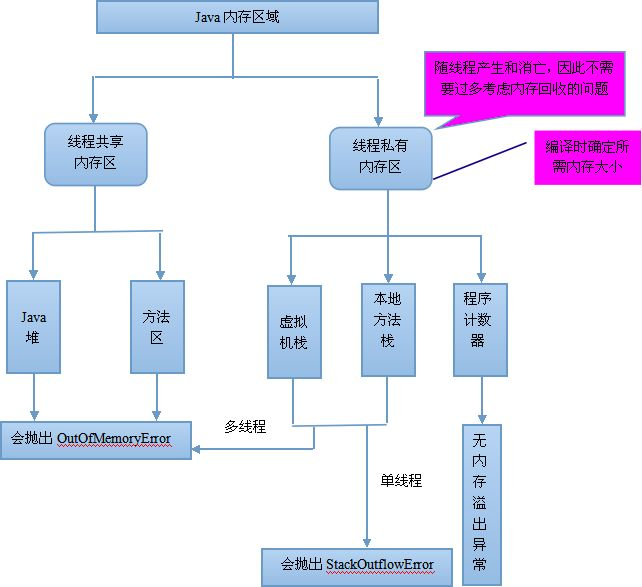
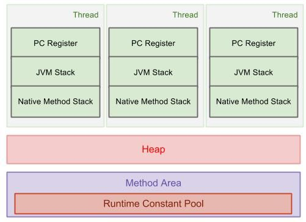

栈是大家都比较熟悉的数据结构了，个人认为本篇文章的重点在于课后的那两个思考题。
为什么函数调用要用“栈”来保存临时变量呢？其他的数据结构不可以吗？
栈有一个很重要的特性就是先进后出，这与函数调用时候的关系如出一辙，假设函数A调用函数B，显然也是先把B函数中的一些临时变量计算完成之后，在去计算A的。这有点像递归调用的味道。
从调用函数进入被调用函数，对于数据来说，变化的是什么呢？是作用域。所以根本上，只要能保证每进入一个新的函数，都是一个新的作用域就可以。而要实现这个，用栈就非常方便。在进入被调用函数的时候，分配一段栈空间给这个函数的变量，在函数结束的时候，将栈顶复位，正好回到调用函数的作用域内。
知乎一篇文章说明了为什么函数调用用栈实现，说的也是上面的意思。
为什么函数调用要用栈实现？
JVM中的堆栈的概念与平时我们说的堆、栈是一样的意思吗？
JVM中的JAVA内存区域组成部分也较多，可以简单的就理解为两大部分：堆和栈。
堆：主要存放java的对象，是被所有的线程共享的。（区别数据结构的堆，它是一棵平衡二叉树）
The Java Virtual Machine has a heap that is shared among all Java Virtual Machine threads. The heap is the run-time data area from which memory for all class instances and arrays is allocated.The heap is created on virtual machine start-up. Heap storage for objects is reclaimed by an automatic storage management system (known as a garbage collector); objects are never explicitly deallocated. The Java Virtual Machine assumes no particular type of automatic storage management system, and the storage management technique may be chosen according to the implementor’s system requirements. The heap may be of a fixed size or may be expanded as required by the computation and may be contracted if a larger heap becomes unnecessary. The memory for the heap does not need to be contiguous.
栈：主要存放线程内的一些临时变量，或是线程调用帧，每个线程独享的。这个栈就相当于函数调用的栈。
Each Java Virtual Machine thread has a private Java Virtual Machine stack, created at the same time as the thread. A Java Virtual Machine stack stores frames (§2.6). A Java Virtual Machine stack is analogous to the stack of a conventional language such as C: it holds local variables and partial results, and plays a part in method invocation and return. Because the Java Virtual Machine stack is never manipulated directly except to push and pop frames, frames may be heap allocated. The memory for a Java Virtual Machine stack does not need to be contiguous.
当然，JAVA内存模型中还有其他的部分，比如：方法区，本地方法栈等。
方法区：可以理解为一块堆，被所有的线程共享。常用来存储一些类信息，常量，静态变量，即时编译器编译后的代码等数据。
本地方法栈：只不过是为了使得用非java语言能够调用java语言逻辑上的一个栈，但实际上可以与虚拟机栈是同一块物理内存。
An implementation of the Java Virtual Machine may use conventional stacks, colloquially called “C stacks,” to support native methods (methods written in a language other than the Java programming language). Native method stacks may also be used by the implementation of an interpreter for the Java Virtual Machine’s instruction set in a language such as C. Java Virtual Machine implementations that cannot load native methods and that do not themselves rely on conventional stacks need not supply native method stacks. If supplied, native method stacks are typically allocated per thread when each thread is created.

